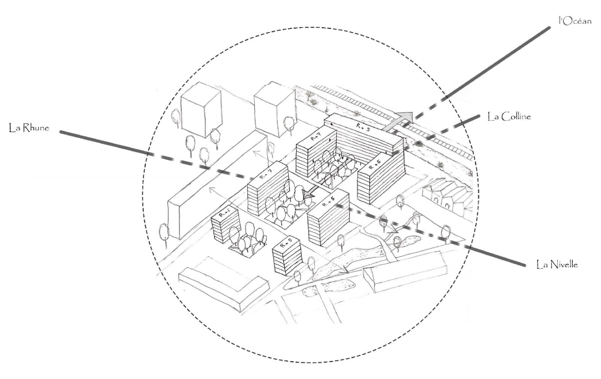
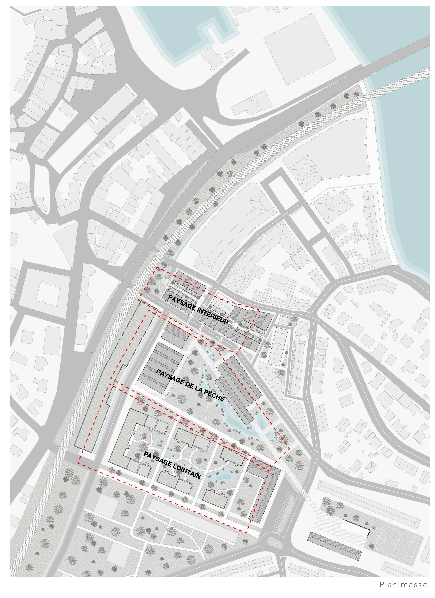
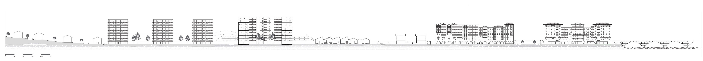
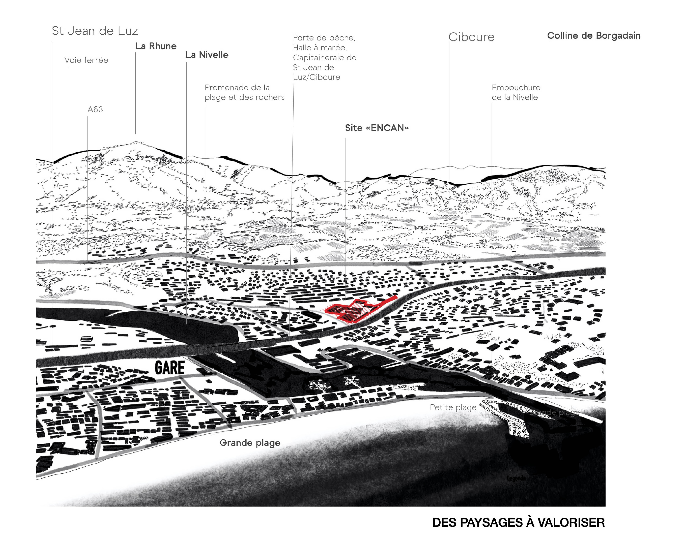
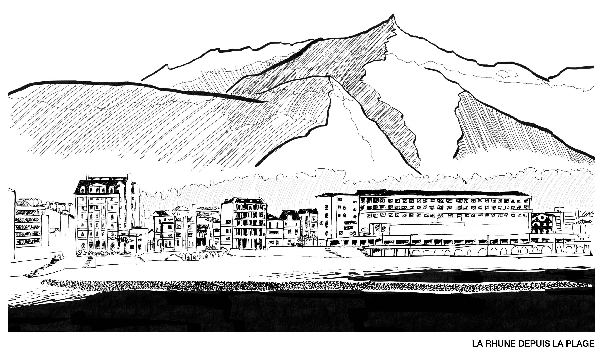

À travers les Paysages
Projet d’urbanisme pour le site de l’ENCAN à Ciboure
Ce projet urbain s’inscrit dans une lecture attentive du territoire de Ciboure, de ses paysages, de ses continuités et des usages qui structurent le site de l’ENCAN.
Il propose une intervention à l’échelle du paysage, attentive aux relations entre sol, parcours, espaces publics et implantation bâtie, afin de révéler les qualités existantes du site.




Échelle territoriale et parcours
Le projet développe une réflexion sur les connexions, les vues, les séquences paysagères et la manière dont une stratégie urbaine peut accompagner les transformations du site sans en effacer les spécificités.



